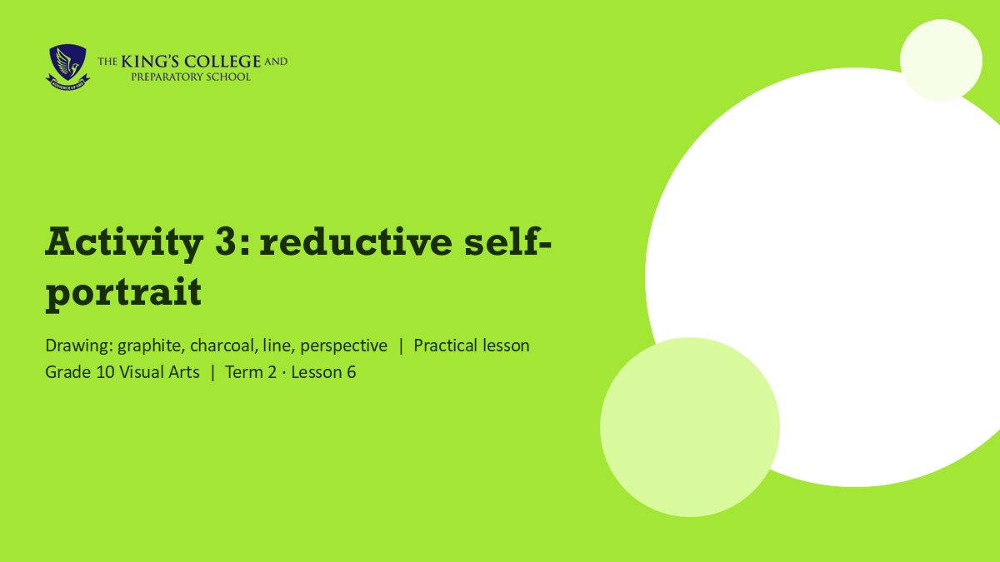

Term 2 · Lesson 6 · Practical lesson
Activity 3: Reductive Self-Portrait
Start Here
Today I Will
- Understand the reductive drawing method
- Lay an even charcoal ground
- Start my reductive self-portrait by drawing out the light
Think first
What if, instead of drawing the shadows, you had to draw the light?
Words to Know
| Word | Meaning |
|---|---|
| Reductive drawing | A drawing made by removing a dark ground to reveal light, instead of adding dark marks. |
| Charcoal ground | An even layer of charcoal rubbed over the whole paper as a mid-to-dark tone. |
| Highlight | The brightest area where light hits the form most directly. |
| Eraser drawing | Using an eraser as a drawing tool to lift out lines and shapes of light. |
| Fixative | A spray that holds charcoal in place so it does not smudge. |
Slides

Videos
Notes
The reductive method: an even charcoal ground and drawing the light out with an eraser, from big shapes to small; chiaroscuro.
The Reductive Method
- Lay the ground: Rub charcoal evenly over the whole sheet with a cloth until it is a smooth mid-grey.
- Map lightly: Using your mapping study, lightly mark the main shapes of light with the eraser edge.
- Lift the big lights: Use the putty eraser to lift out the largest light areas first: forehead, cheek, nose bridge.
- Add the darks: Use compressed charcoal to deepen the shadow side, the eye sockets and under the nose.
- Refine: Use a sharp eraser edge for the brightest highlights, like the eye and the tip of the nose.
Tips for a Strong Reductive Portrait
- Work big to small: Large shapes of light first; detail only at the end.
- Clean the eraser: Knead the putty eraser often, or it puts charcoal back on.
- Squint at the photo: Check that your three biggest shapes of light match the photo.
- Leave the shadow side alone: Much of the dark side can stay as ground; you do not need to erase there.
Remember
In a reductive drawing, the eraser is your brush of light.
Practical
You need: A4 paper, charcoal, cloth, putty eraser, eraser edge, side-lit photo, VJ
Start the Reductive Charcoal Self-Portrait
- Cover your desk with newspaper and rub an even mid-grey charcoal ground over the paper.
- Lightly mark the shapes of light from your mapping study with the eraser.
- Lift out the largest light areas of your face with the putty eraser.
- Deepen the shadow side with compressed charcoal where needed.
- Step back and compare with your photo. Adjust the biggest shapes before any detail.
- In your VJ, annotate the method and one challenge you met today.
Test Yourself
- What makes reductive drawing different from ordinary drawing?
- Why should the charcoal ground stay mid-grey and not black?
- Why do we work from big shapes to small details?
Show answers
1. You remove the dark ground to reveal light instead of adding dark marks. 2. A very dark ground is hard to erase, so the lights will not come through clearly. 3. The big shapes give the form and likeness; details on wrong shapes cannot fix the drawing.
Finished Early?
Reductive sphere
Try the reductive method on a simple form first.
- Rub a small square of mid-grey charcoal ground in your VJ.
- Lift out a circle of light with a putty eraser, brightest on one side.
- Deepen the shadow side with compressed charcoal.
- Lift a sharp highlight with an eraser edge.